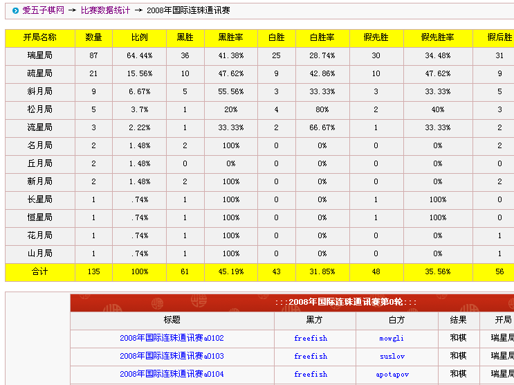

爱五子棋网“谱度”系统V1.0 公测
#1 爱五子棋网“谱度”系统V1.0 公测作者：小丸.net 发表时间：2013-7-24 8:42:54
经过半年的策划与修正，爱五子棋网“谱度”系统今日公测，版本为1.0
入口：pudu.asp
或者：
名词解释
谱度----故名思议就是，棋谱百度，即可以根据开局变化搜索棋谱的一类系统。
V1.0版功能导航：
1.可以通过开局手顺进行查询棋谱
2.系统自动识别同型同手顺棋谱
3.与本站棋谱库完美结合可查询更多资料
4.增强了比赛系统的信息统计
5.增加了棋手的信息统计
使用方法：
在左侧棋盘上按手顺点击你想要的变化前几手，会在右侧信息框内显示当前棋谱下一手的棋谱以及胜负信息。
点击上图红色的棋谱代码，可以直接进入该手【这时棋盘上的棋谱会自动变换正方向】的下一手，以及该手同型的所有棋谱。
点击棋谱信息可以进入相关棋谱，点击棋手可以查谱该棋手的所有棋谱，并且有全部该棋手的胜负、开局、交换等信息。
另外，点击棋谱所属分类，可以进入该比赛的详细信息统计：
［ 伤情路同学于 2013-7-24 8:44:50 时花20金币送鲜花一朵］
［ 伤情路同学于 2013-7-24 8:44:50 时花20金币送鲜花一朵］
［ 伤情路同学于 2013-7-24 8:44:50 时花20金币送鲜花一朵］
［ 伤情路同学于 2013-7-24 8:44:50 时花20金币送鲜花一朵］
［ 伤情路同学于 2013-7-24 8:44:50 时花20金币送鲜花一朵］
［ 伤情路同学于 2013-7-24 8:44:50 时花20金币送鲜花一朵］
［ 伤情路同学于 2013-7-24 8:44:50 时花20金币送鲜花一朵］
［ 伤情路同学于 2013-7-24 8:44:50 时花20金币送鲜花一朵］
［ 梧桐风同学于 2013-7-24 8:59:07 时花20金币送鲜花一朵］
［ 梧桐风同学于 2013-7-24 8:59:07 时花20金币送鲜花一朵］
［ 梧桐风同学于 2013-7-24 8:59:07 时花20金币送鲜花一朵］
［ 梧桐风同学于 2013-7-24 8:59:07 时花20金币送鲜花一朵］
［ 梧桐风同学于 2013-7-24 8:59:07 时花20金币送鲜花一朵］
［ 梧桐风同学于 2013-7-24 8:59:07 时花20金币送鲜花一朵］
［ 梧桐风 于 2013-7-24 9:03:44 时奖励此帖[金币加 100 威望加1］
［ 屏蔽同学于 2013-7-24 11:42:34 时花20金币送鲜花一朵］
［ 屏蔽同学于 2013-7-24 11:42:34 时花20金币送鲜花一朵］
［此帖子已被 小丸.net 在 2013-7-24 12:14:06 编辑过］
［ 小红眼镜同学于 2013-7-24 12:14:57 时花20金币送鲜花一朵］
［ 小红眼镜同学于 2013-7-24 12:14:57 时花20金币送鲜花一朵］
［ 小红眼镜同学于 2013-7-24 12:14:57 时花20金币送鲜花一朵］
［ 失落刀同学于 2013-7-24 16:30:56 时花20金币送鲜花一朵］
［ 失落刀同学于 2013-7-24 16:30:56 时花20金币送鲜花一朵］
［ 失落刀同学于 2013-7-24 16:30:56 时花20金币送鲜花一朵］
［ 失落刀同学于 2013-7-24 16:30:56 时花20金币送鲜花一朵］
［ 失落刀同学于 2013-7-24 16:30:56 时花20金币送鲜花一朵］
［ 失落刀同学于 2013-7-24 16:30:56 时花20金币送鲜花一朵］
［ 失落刀同学于 2013-7-24 16:30:56 时花20金币送鲜花一朵］
［ 失落刀同学于 2013-7-24 16:30:56 时花20金币送鲜花一朵］
［ 失落刀同学于 2013-7-24 16:30:56 时花20金币送鲜花一朵］
［ 失落刀同学于 2013-7-24 16:30:56 时花20金币送鲜花一朵］
［ 失落刀同学于 2013-7-24 16:30:56 时花20金币送鲜花一朵］
［ 失落刀同学于 2013-7-24 16:30:56 时花20金币送鲜花一朵］
［ 第五象限同学于 2013-8-10 18:11:23 时花20金币送鲜花一朵］
［ 第五象限同学于 2013-8-10 18:11:23 时花20金币送鲜花一朵］
［ 第五象限同学于 2013-8-10 18:11:23 时花20金币送鲜花一朵］
［ 第五象限同学于 2013-8-10 18:11:23 时花20金币送鲜花一朵］
［ 第五象限同学于 2013-8-10 18:11:23 时花20金币送鲜花一朵］
#2 Re:爱五子棋网“谱度”系统V1.0 公测作者：伤情路 发表时间：2013-7-24 8:45:51
给力
#3 Re:爱五子棋网“谱度”系统V1.0 公测作者：梧桐风 发表时间：2013-7-24 10:18:30
谱度众生，善哉善哉
#4 Re:爱五子棋网“谱度”系统V1.0 公测作者：啊呆 发表时间：2013-7-24 11:07:31
辛苦了！#5 Re:爱五子棋网“谱度”系统V1.0 公测作者：丹尼 发表时间：2013-7-24 11:21:41
辛苦了！~~~#6 Re:爱五子棋网“谱度”系统V1.0 公测作者：一块金子 发表时间：2013-7-24 11:37:03
试用了下感觉不错
以后是不是也要花金币用？
#7 Re:一块金子【==Re:爱五子棋网“谱度”系统V1.0 公测==】作者：小丸.net 发表时间：2013-7-24 12:12:34
引用：不需要。。。。免费使用哦。。。。
原文由 一块金子 发表于 2013-7-24 11:37:03 :试用了下感觉不错
以后是不是也要花金币用？
#8 Re:爱五子棋网“谱度”系统V1.0 公测作者：屏蔽 发表时间：2013-7-24 13:24:43
我在版主之家提的问题后来怎么样了。#9 Re:爱五子棋网“谱度”系统V1.0 公测作者：小丸.net 发表时间：2013-7-24 13:32:10
那个问题只是个别的几个谱，查起来比较麻烦，等我把大的功能完善了，再回来查小问题。最近爱网打的补丁比较多。。。。
#10 Re:爱五子棋网“谱度”系统V1.0 公测作者：天逸乄西西 发表时间：2013-7-24 17:13:53
强大的爱五网
#11 Re:爱五子棋网“谱度”系统V1.0 公测作者：aabb 发表时间：2013-7-24 19:57:07
原型是俄慢网的打谱工具？#12 Re:爱五子棋网“谱度”系统V1.0 公测作者：小丸.net 发表时间：2013-7-24 20:15:45
这套系统是我写的，和俄慢没能任何关系 ，也没有使用俄慢的核心代码。。。。
#13 Re:爱五子棋网“谱度”系统V1.0 公测作者：嵯峨 发表时间：2013-8-9 18:14:28
用不了了？